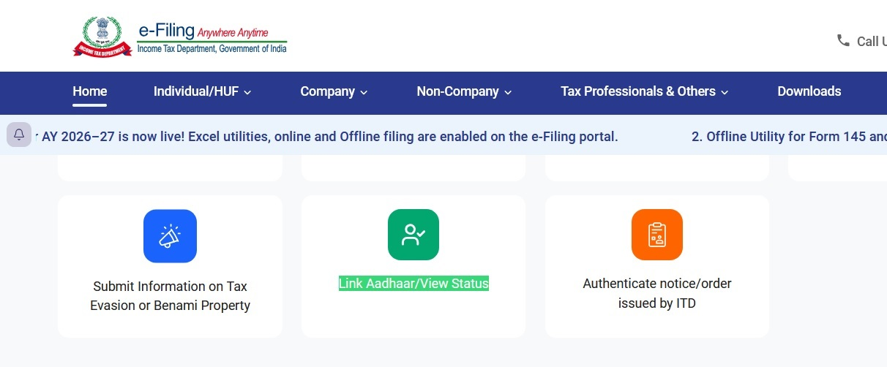
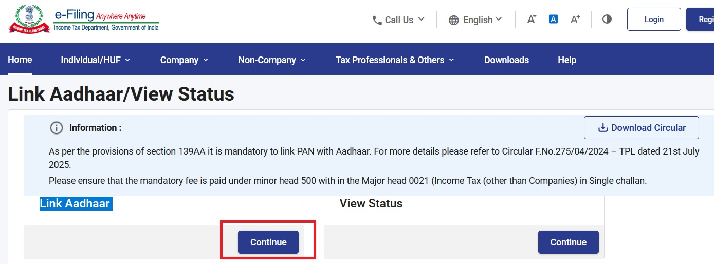
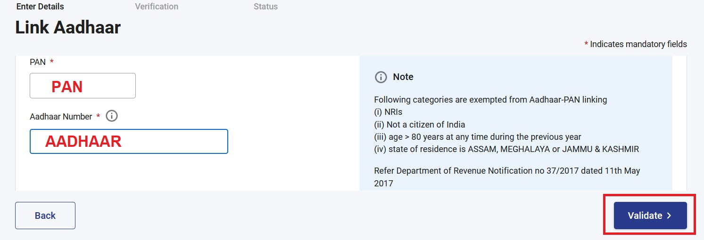
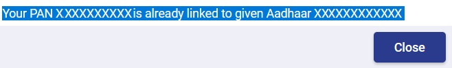

| Step a) |
Initially, the name in PAN and AADHAAR must match exactly without any spelling differences. If they do not match, apply the following changes to your PAN: 01) Update the name to match your AADHAAR. 02) Update the address to match your AADHAAR. 03) Include your email id. 04) Include your valid mobile number. Cost of applying PAN changes yourself: 1000.00 ₹(INR)/1000.00 ರೂ/1000.00 ரூ. If applying through a xerox shop or broker, the service charge may be around 300.00 ₹(INR)/300.00 ರೂ/300.00 ரூ. |
|
| Step b) |
Wait for the approval for the changes in PAN. Once approved: 01) You will first receive the e-PAN as an email attachment. 02) Later, you will receive the physical PAN card at your registered Aadhaar address. |
|
| Step c) |
Open https://www.incometax.gov.in/iec/foportal Click on "Link Aadhaar / View Status". |
 |
| Step d) | Click "Continue" after selecting "Link Aadhaar". |
 |
| Step e) |
Enter the PAN number Enter the Aadhaar number Click Validate |
 |
| Step f) |
Wait for 02 to 07 days(including Saturday/Sunday) to receive the following message: "Your PAN XXXXXXXXXX is already linked to given Aadhaar XXXXXXXXXXXX" |
 |
| Step g) |
I applied on Fri 05-Jun-2026 03:00 PM. I received the linked confirmation message on Sun 07-Jun-2026 08:10 AM IST. |
|